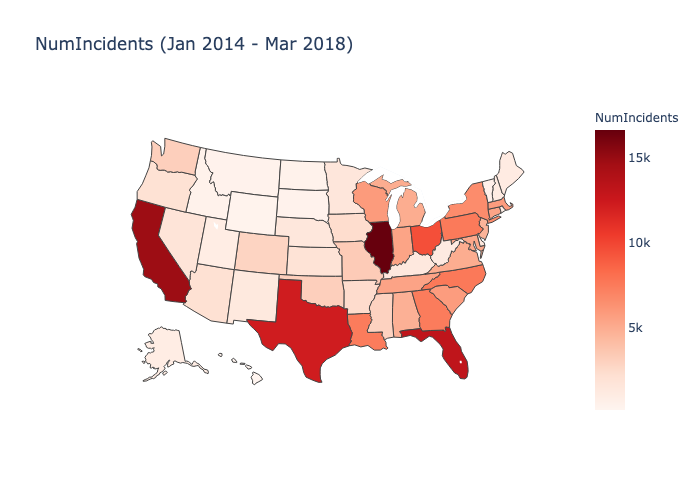
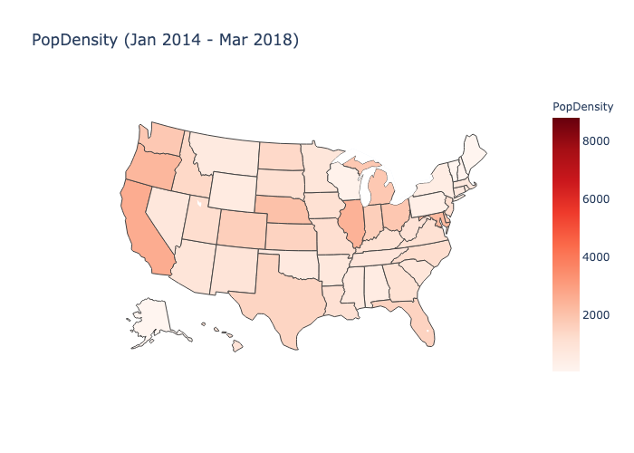
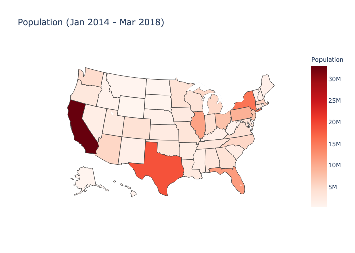
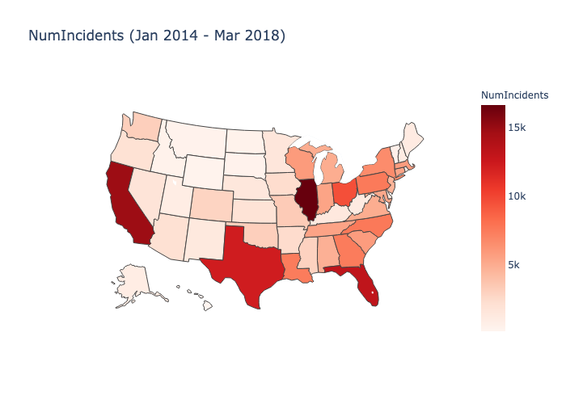
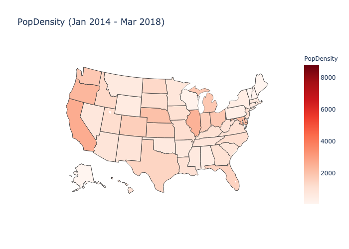
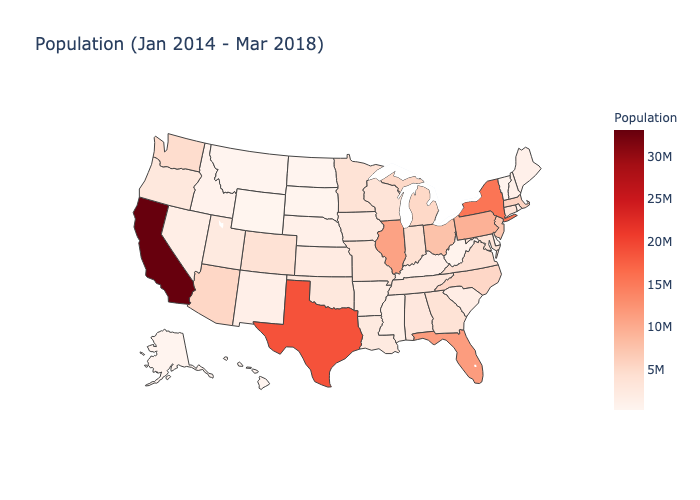

Overview
Our goal is to predict housing and population vs. rate of gun violence using multiple regression. We used utilizing multiple regressionand/or a t-test between the rate of gunviolence and high vs. low housing prices. The specific attributes of the data we are looking at are the population, housing price, rate, location (city/county), time (year). To visualize our results, we implemented multiple 2D scatterplots, bar graphs, and a map display.
Hypothesis
There is a statistical difference between gun violence rate (number of gun violence incidents per capita) between areas with expensive housing and areas with inexpensive housing. Specifically, we expect areas with expensive housing to have lower rates of gun violence. We also hypothesize gun violence rate will increase with population density.
Our Five Analysis Aspects
* for reference, our data span from Jan 2014 to March 2018, GVRate = num_incidents/person/year, HomocideRate/Deadliness = num_killed/person
1. Housing and Population vs Rate of Gun Violence - linear regression
2. T-test on rates of gun violence split among different high vs low housing prices
3. 3 axis scatter plots of:
Housing Price vs PopDensity vs GVRate
4. 2 axis scatter plots of:
HousingPrice vs GV Rate
PopDensity vs GV Rate
Population vs GV Rate
5. Display data on a US Map
GVRate
Housing Price
Injured
Killed
NumInccidents
PopDensity
Population
For our full results and graphs, please refer to the outputs of the github under analysis/output, add the graphs there or run the corresponding scripts to get more graphs. You can also take a look at kmeans; it essentially separates the data a little lol and adds some nice colors. :)
2DScatter - contains the 2DScatter plots
3DScatter - contains the 3DScatter plots
kmeans - contains clustering of data (not using)
maps - contains the maps of U.S.
 




